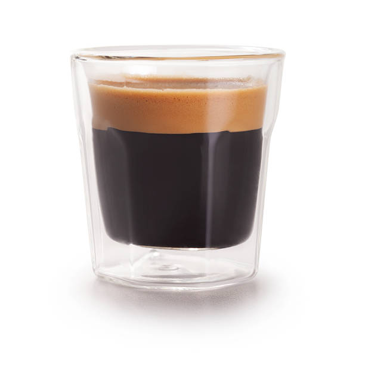

Welcome to The World of Cafe Drinks
The modern coffee shop experience revolves almost entirely around one miraculous component: **espresso**. This concentrated coffee beverage is the backbone of lattes, cappuccinos, macchiatos, and americanos, yet it is an art form in itself. A perfect shot of espresso requires a delicate balance of science and skill, demanding precise control over grind size, tamping pressure, water temperature, and extraction time. This website is a journey into that world, exploring the technical depth and delicious variety found within the cafe menu. The quality of a single shot—its body, acidity, sweetness, and the rich, reddish-brown foam known as crema—determines the success of every drink built upon it.
The standard espresso recipe, often called a 'double shot' or 'doppio,' involves extracting roughly 60 milliliters of liquid from 18 to 20 grams of finely ground coffee over a period of 25 to 30 seconds. Deviating from these parameters can lead to a 'sour' (under-extracted) or 'bitter' (over-extracted) shot. My fascination lies in this technical perfection: the pursuit of the "god shot." Understanding espresso is the key to appreciating all cafe beverages. It provides the intensity necessary to cut through milk and sugar, delivering the powerful coffee flavor we crave. Join me as we explore how this small, potent volume of coffee is transformed into the diverse and beloved drinks that define coffee culture globally. From the silent, focused grind to the hiss of the steam wand, the cafe is a laboratory of taste, all starting with the fundamental beauty of espresso. We will explore the various recipes next.